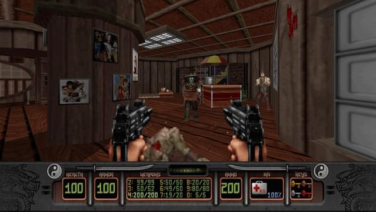
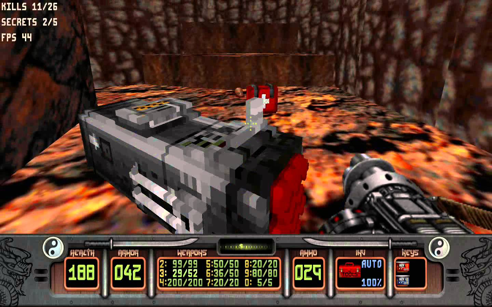

This game was yet another build engine game. The game took influence from the many martial arts movies. The main character has a lot of personality which are demonstrated in his voice lines. While this may just look like another build engine game, it does have features that set it apart from Duke Nukem and Blood.
One of the main feature related to rendering was the use of voxels. Think of voxels are 3D pixel art. It's main use of them was items and weapons in the game, giving them an actual 3D appearance.
